# A tibble: 8 × 2
get_variable_saec n
<dbl> <int>
1 1 68
2 2 69
3 3 66
4 4 62
5 5 61
6 6 66
7 7 59
8 8 63i_informed_trust
Estrategia 1. Escala cuantitativa Informed Trust
Distribución informed trust
Compare variables distributions (standariezed)
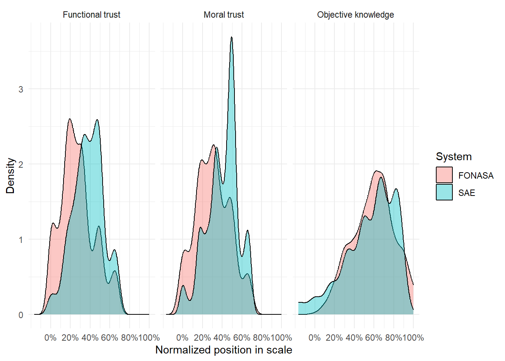
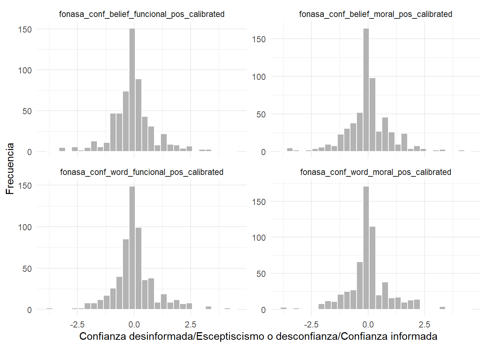
# A tibble: 2 × 4
ai_disclosure_fonasa mean sd n
<dbl> <dbl> <dbl> <int>
1 0 0.0913 0.997 266
2 1 -0.166 0.922 248# A tibble: 2 × 4
performance_fonasa mean sd n
<dbl> <dbl> <dbl> <int>
1 0 -0.117 0.892 268
2 1 0.0587 1.04 246# A tibble: 2 × 4
control_humano_fonasa mean sd n
<dbl> <dbl> <dbl> <int>
1 0 -0.215 1.04 263
2 1 0.158 0.846 251# A tibble: 2 × 4
ai_disclosure_fonasa mean sd n
<dbl> <dbl> <dbl> <int>
1 0 0.0884 1.01 266
2 1 -0.0865 0.952 248# A tibble: 2 × 4
performance_fonasa mean sd n
<dbl> <dbl> <dbl> <int>
1 0 -0.0867 0.920 268
2 1 0.103 1.05 246# A tibble: 2 × 4
control_humano_fonasa mean sd n
<dbl> <dbl> <dbl> <int>
1 0 -0.147 1.12 263
2 1 0.162 0.795 251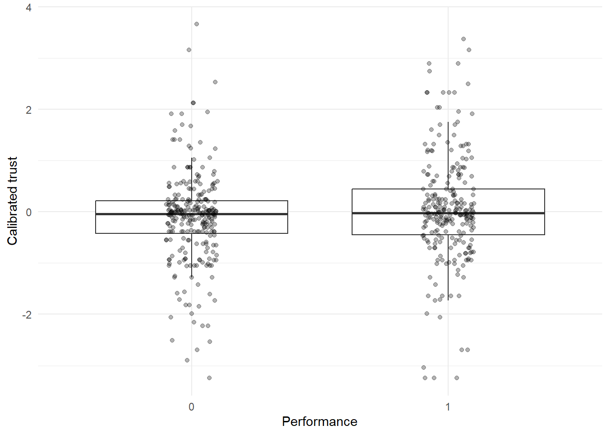
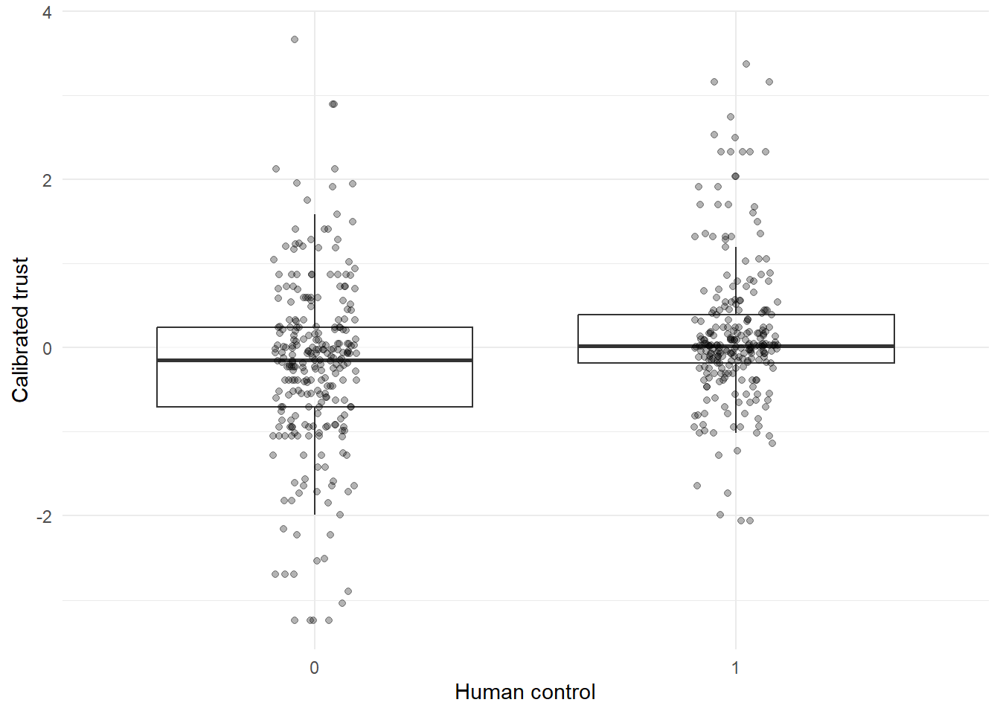
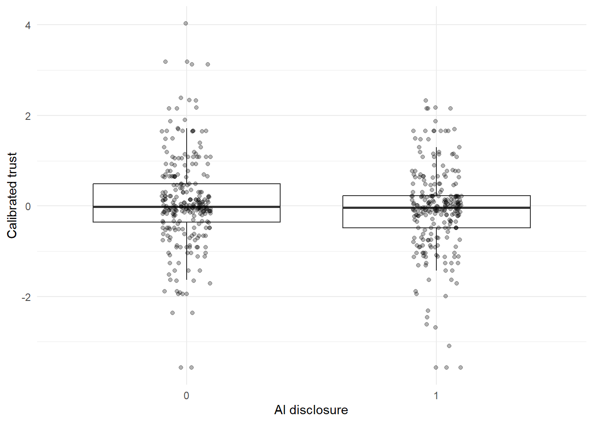
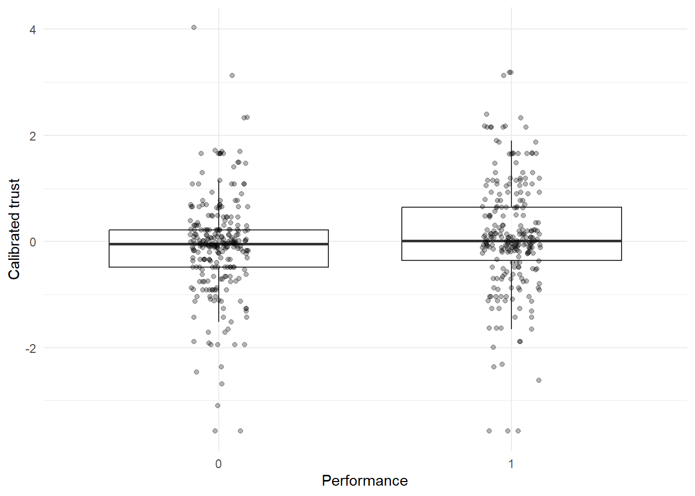
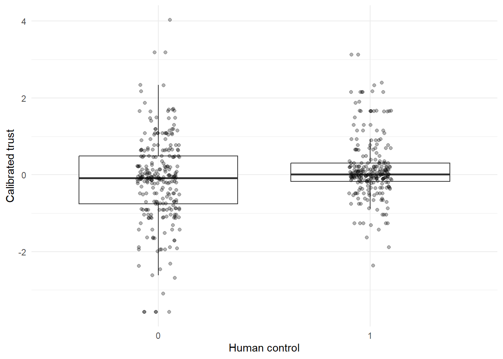
| Calibrated functional McKnight trust (FONASA) | Calibrated moral McKnight trust (FONASA) | Calibrated functional MDMT trust (FONASA) | Calibrated moral MDMT trust (FONASA) | |
| Predictors | Estimates | Estimates | Estimates | Estimates |
| (Intercept) | -0.28 (0.32) |
-0.36 (0.33) |
-0.09 (0.32) |
-0.36 (0.32) |
| AI disclosure | -0.25 ** (0.08) |
-0.17 * (0.09) |
-0.21 * (0.08) |
-0.22 ** (0.08) |
| Human control | 0.37 *** (0.08) |
0.31 *** (0.09) |
0.33 *** (0.08) |
0.36 *** (0.08) |
| Performance | 0.18 * (0.08) |
0.20 * (0.09) |
0.28 ** (0.08) |
0.25 ** (0.08) |
| Genero: Mujer | 0.05 (0.08) |
0.00 (0.09) |
0.06 (0.08) |
0.07 (0.08) |
| Edad | -0.00 (0.00) |
-0.00 (0.00) |
0.00 (0.00) |
0.00 (0.00) |
| Educación: Media completa | 0.17 (0.27) |
0.33 (0.28) |
-0.13 (0.27) |
0.12 (0.27) |
| Educación: Superior | 0.20 (0.27) |
0.37 (0.27) |
-0.14 (0.27) |
0.12 (0.26) |
| Observations | 514 | 514 | 514 | 514 |
| R2 / R2 adjusted | 0.065 / 0.052 | 0.046 / 0.033 | 0.063 / 0.051 | 0.067 / 0.054 |
| * p<0.05 ** p<0.01 *** p<0.001 | ||||
Estrategia 2. Tricotomizar y modelo multinomial
| fonasa_calibrated_funcional_cat | n | prop |
|---|---|---|
| Skeptical informed / mistrust uninformed | 284 | 0.55 |
| Ignorant trust | 96 | 0.19 |
| Informed trust | 134 | 0.26 |
| fonasa_calibrated_moral_cat | n | prop |
|---|---|---|
| Skeptical informed / mistrust uninformed | 267 | 0.52 |
| Ignorant trust | 102 | 0.20 |
| Informed trust | 145 | 0.28 |
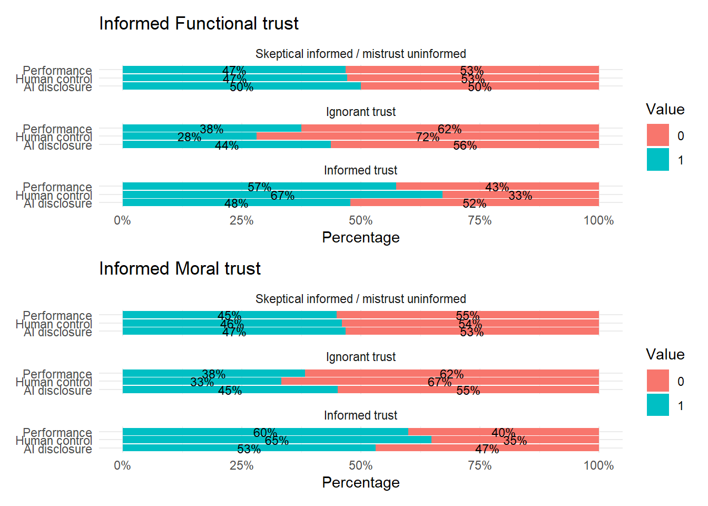
# weights: 27 (16 variable)
initial value 564.686716
iter 10 value 478.615298
iter 20 value 477.950522
final value 477.950492
converged| Informed Trust – Functional (FONASA, post) | ||
| Predictors | Odds Ratios | Response |
| (Intercept) | 0.21 | Ignorant trust |
| ai_disclosure_fonasa | 0.75 | Ignorant trust |
| control_humano_fonasa | 0.41 *** | Ignorant trust |
| performance_fonasa | 0.59 * | Ignorant trust |
| generoMujer | 0.75 | Ignorant trust |
| edad_num | 1.04 ** | Ignorant trust |
| education_recodedMedia completa | 1.03 | Ignorant trust |
| education_recodedEducación superior | 0.81 | Ignorant trust |
| (Intercept) | 0.19 | Informed trust |
| ai_disclosure_fonasa | 0.93 | Informed trust |
| control_humano_fonasa | 2.37 *** | Informed trust |
| performance_fonasa | 1.62 * | Informed trust |
| generoMujer | 1.40 | Informed trust |
| edad_num | 1.00 | Informed trust |
| education_recodedMedia completa | 1.18 | Informed trust |
| education_recodedEducación superior | 1.15 | Informed trust |
| Observations | 514 | |
| R2 / R2 adjusted | 0.062 / 0.060 | |
| * p<0.05 ** p<0.01 *** p<0.001 | ||
# weights: 27 (16 variable)
initial value 564.686716
iter 10 value 495.964849
iter 20 value 495.119054
final value 495.118502
converged| Informed Trust – Moral (FONASA, post) | ||
| Predictors | Odds Ratios | Response |
| (Intercept) | 0.48 | Ignorant trust |
| ai_disclosure_fonasa | 0.91 | Ignorant trust |
| control_humano_fonasa | 0.56 * | Ignorant trust |
| performance_fonasa | 0.69 | Ignorant trust |
| generoMujer | 0.82 | Ignorant trust |
| edad_num | 1.03 * | Ignorant trust |
| education_recodedMedia completa | 0.55 | Ignorant trust |
| education_recodedEducación superior | 0.48 | Ignorant trust |
| (Intercept) | 0.61 | Informed trust |
| ai_disclosure_fonasa | 1.34 | Informed trust |
| control_humano_fonasa | 2.25 *** | Informed trust |
| performance_fonasa | 1.99 ** | Informed trust |
| generoMujer | 1.17 | Informed trust |
| edad_num | 0.98 | Informed trust |
| education_recodedMedia completa | 0.62 | Informed trust |
| education_recodedEducación superior | 0.67 | Informed trust |
| Observations | 514 | |
| R2 / R2 adjusted | 0.054 / 0.052 | |
| * p<0.05 ** p<0.01 *** p<0.001 | ||
| sae_calibrated_funcional_cat | n | prop |
|---|---|---|
| Skeptical informed / mistrust uninformed | 241 | 0.47 |
| Ignorant trust | 95 | 0.18 |
| Informed trust | 178 | 0.35 |
| sae_calibrated_moral_cat | n | prop |
|---|---|---|
| Skeptical informed / mistrust uninformed | 229 | 0.45 |
| Ignorant trust | 98 | 0.19 |
| Informed trust | 187 | 0.36 |
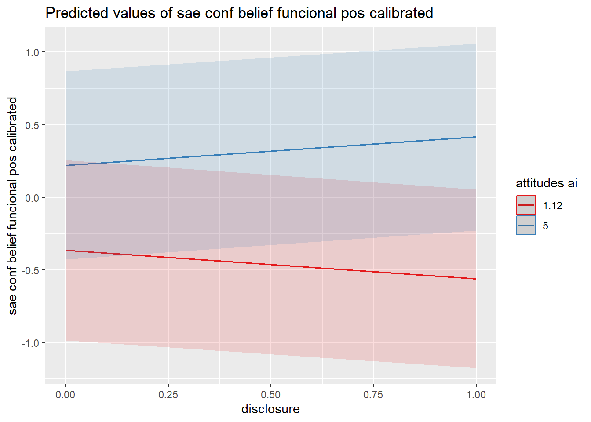
# weights: 27 (16 variable)
initial value 564.686716
iter 10 value 526.117247
iter 20 value 520.808609
final value 520.808418
converged| Informed Trust – Functional (SAE, post) | ||
| Predictors | Odds Ratios | Response |
| (Intercept) | 0.94 | Ignorant trust |
| disclosure | 0.85 | Ignorant trust |
| control_humano | 1.19 | Ignorant trust |
| inf_situacional | 0.87 | Ignorant trust |
| generoMujer | 0.72 | Ignorant trust |
| edad_num | 0.99 | Ignorant trust |
| education_recodedMedia completa | 1.34 | Ignorant trust |
| education_recodedEducación superior | 0.76 | Ignorant trust |
| (Intercept) | 0.26 | Informed trust |
| disclosure | 1.34 | Informed trust |
| control_humano | 1.21 | Informed trust |
| inf_situacional | 1.47 | Informed trust |
| generoMujer | 1.19 | Informed trust |
| edad_num | 1.00 | Informed trust |
| education_recodedMedia completa | 2.19 | Informed trust |
| education_recodedEducación superior | 1.58 | Informed trust |
| Observations | 514 | |
| R2 / R2 adjusted | 0.020 / 0.019 | |
| * p<0.05 ** p<0.01 *** p<0.001 | ||
# weights: 27 (16 variable)
initial value 564.686716
iter 10 value 528.004827
iter 20 value 525.509684
final value 525.509660
converged| Informed Trust – Moral (SAE, post) | ||
| Predictors | Odds Ratios | Response |
| (Intercept) | 0.89 | Ignorant trust |
| disclosure | 0.80 | Ignorant trust |
| control_humano | 1.25 | Ignorant trust |
| inf_situacional | 1.17 | Ignorant trust |
| generoMujer | 0.65 | Ignorant trust |
| edad_num | 0.98 | Ignorant trust |
| education_recodedMedia completa | 1.16 | Ignorant trust |
| education_recodedEducación superior | 0.91 | Ignorant trust |
| (Intercept) | 0.20 | Informed trust |
| disclosure | 1.34 | Informed trust |
| control_humano | 1.43 | Informed trust |
| inf_situacional | 1.59 * | Informed trust |
| generoMujer | 1.13 | Informed trust |
| edad_num | 1.00 | Informed trust |
| education_recodedMedia completa | 1.99 | Informed trust |
| education_recodedEducación superior | 1.93 | Informed trust |
| Observations | 514 | |
| R2 / R2 adjusted | 0.021 / 0.019 | |
| * p<0.05 ** p<0.01 *** p<0.001 | ||
SAE
Modelo Informed Trust continuos
| Calibrated functional McKnight trust (SAE) | Calibrated moral McKnight trust (SAE) | Calibrated functional MDMT trust (SAE) | Calibrated moral MDMT trust (SAE) | |
| Predictors | Estimates | Estimates | Estimates | Estimates |
| (Intercept) | -0.40 (0.32) |
-0.33 (0.33) |
-0.42 (0.33) |
-0.55 (0.33) |
| Disclosure | 0.00 (0.08) |
0.04 (0.08) |
0.03 (0.08) |
0.01 (0.08) |
| Situational information | -0.05 (0.08) |
-0.04 (0.09) |
-0.04 (0.08) |
-0.05 (0.08) |
| Human control | 0.01 (0.08) |
0.06 (0.09) |
0.00 (0.08) |
0.01 (0.08) |
| Genero: Mujer | 0.26 ** (0.08) |
0.26 ** (0.08) |
0.18 * (0.08) |
0.19 * (0.08) |
| Edad | 0.01 * (0.00) |
0.01 * (0.00) |
0.01 * (0.00) |
0.01 * (0.00) |
| Educación: Media completa | 0.37 (0.27) |
0.21 (0.28) |
0.41 (0.27) |
0.52 (0.28) |
| Educación: Superior | 0.28 (0.27) |
0.16 (0.27) |
0.29 (0.27) |
0.37 (0.27) |
| Observations | 514 | 514 | 514 | 514 |
| R2 / R2 adjusted | 0.031 / 0.018 | 0.029 / 0.015 | 0.024 / 0.010 | 0.029 / 0.015 |
| * p<0.05 ** p<0.01 *** p<0.001 | ||||
| Calibrated functional McKnight trust (SAE) | Calibrated moral McKnight trust (SAE) | Calibrated functional MDMT trust (SAE) | Calibrated moral MDMT trust (SAE) | |
| Predictors | Estimates | Estimates | Estimates | Estimates |
| (Intercept) | -0.34 (0.51) |
-0.33 (0.52) |
-0.39 (0.51) |
-0.29 (0.52) |
| disclosure | -0.30 (0.41) |
-0.10 (0.42) |
-0.29 (0.41) |
-0.53 (0.42) |
| attitudes ai | 0.00 (0.14) |
0.02 (0.14) |
0.02 (0.14) |
-0.06 (0.14) |
| inf situacional | 0.12 (0.41) |
0.04 (0.42) |
0.19 (0.41) |
0.18 (0.42) |
| control humano | -1.08 ** (0.41) |
-1.04 * (0.42) |
-1.10 ** (0.41) |
-1.21 ** (0.42) |
| genero [Mujer] | 0.24 ** (0.08) |
0.25 ** (0.08) |
0.16 (0.08) |
0.17 * (0.08) |
| edad num | 0.01 (0.00) |
0.01 (0.00) |
0.01 (0.00) |
0.01 (0.00) |
| education recoded [Media completa] |
0.35 (0.27) |
0.19 (0.28) |
0.39 (0.27) |
0.50 (0.27) |
| education recoded [Educación superior] |
0.27 (0.26) |
0.15 (0.27) |
0.27 (0.26) |
0.36 (0.27) |
| disclosure × attitudes ai | 0.10 (0.13) |
0.04 (0.14) |
0.10 (0.13) |
0.18 (0.13) |
| attitudes ai × inf situacional |
-0.06 (0.13) |
-0.03 (0.14) |
-0.08 (0.13) |
-0.07 (0.13) |
| attitudes ai × control humano |
0.35 ** (0.13) |
0.36 ** (0.14) |
0.36 ** (0.13) |
0.40 ** (0.13) |
| Observations | 514 | 514 | 514 | 514 |
| R2 / R2 adjusted | 0.063 / 0.043 | 0.061 / 0.040 | 0.059 / 0.038 | 0.064 / 0.044 |
| * p<0.05 ** p<0.01 *** p<0.001 | ||||
[[1]]
[[2]]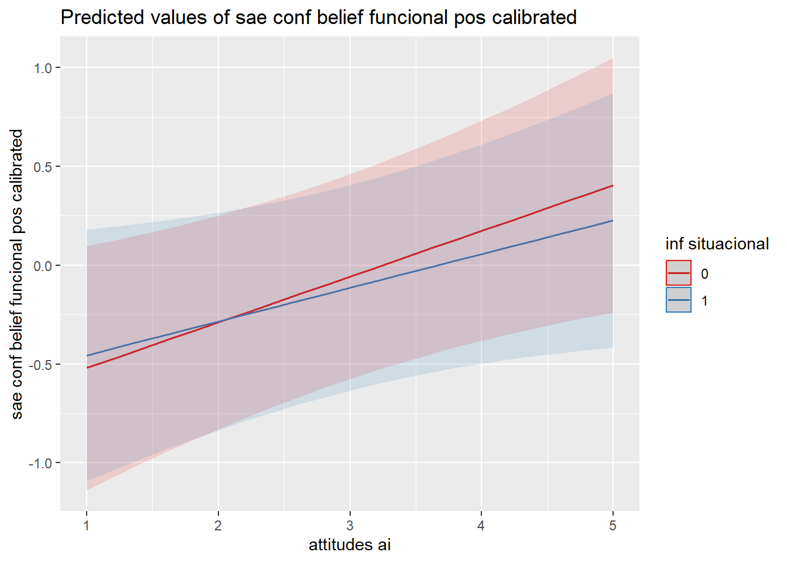
[[3]]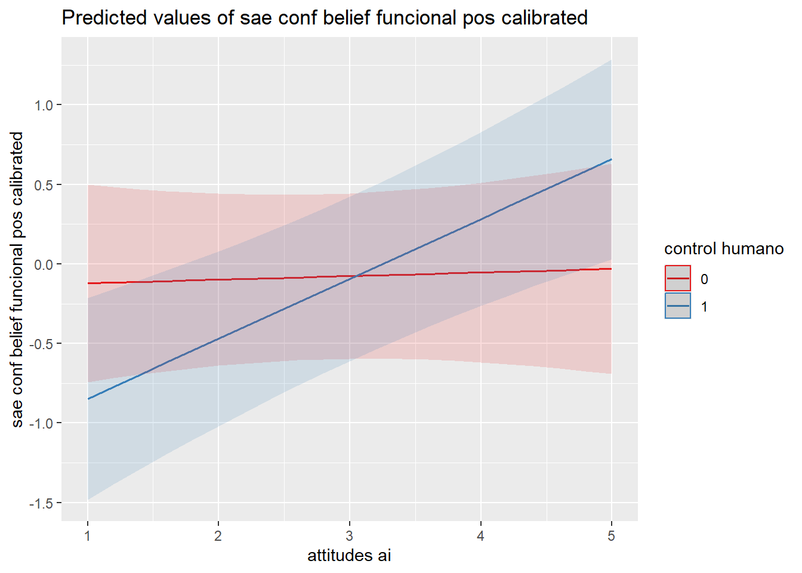